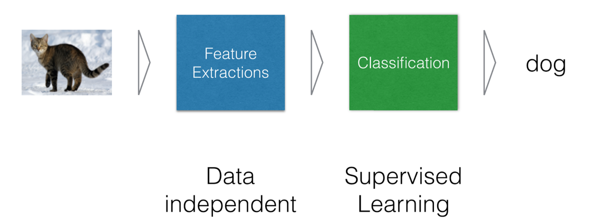

class: center, middle # 第一課 : ### 介紹 Deep Learning ### ... and your setup! 翻譯：Chun Shan Wnag 來源：Marc Lelarge --- # 課程目標 ## 概述 - 什麼情況什麼場合會使用深度學習 - 怎麼使用深度學習 - 深度學習簡述 -- ## Deep Learning .red[自己動手!] - 快速發展的領域，擁有豐富的線上可用資源 - 立即使用神將網路，了解他並且從中獲得成果！ - .red[請主動積極的參與課程] --- # 假如你(已經)找不到位置 - 課程網站: <br> <http://www.dataflowr.com> - 課程GitHub: <br> <https://github.com/mlelarge/dataflowr> --- # 什麼是深度學習 ### 典型的機器學習系統 .center[  ] .credit[Slide credit: O. Grisel and C. Ollion] --- # 什麼是深度學習 ### 典型的機器學習系統 .center[ <img src="images/image_ml_2.png" style="width: 670px;" /> ] .credit[Slide credit: O. Grisel and C. Ollion] --- # 什麼是深度學習 ### 深度學習系統 .center[ <img src="images/image_dl.png" style="width: 700px;" /> ] .credit[Slide credit: O. Grisel and C. Ollion] --- # 為什麼要現在開始深度學習 - 機器學習的五十年研究 - .grey[CPUs/GPUs/記憶體 等設備基於其他目開始的高速發展] - .grey[來自 “the internet”的大量資料] - .grey[合作與可複制科學的工具、文化] - .grey[來自大佬公司的支持與支援] --- # 為什麼要現在開始深度學習 - 機器學習的五十年研究 - CPUs/GPUs/記憶體 等設備基於其他目開始的高速發展 - .grey[來自 “the internet”的大量資料] - .grey[合作與可複制科學的工具、文化] - .grey[來自大佬公司的支持與支援] .center[ <img src="images/gpu_tpu.png" style="width: 450px;" /><br/><br/> <small>_GPU and TPU_</small> ] --- # 為什麼要現在開始深度學習 - 機器學習的五十年研究 - CPUs/GPUs/記憶體 等設備基於其他目開始的高速發展 - 來自 “the internet”的大量資料 - .grey[合作與可複制科學的工具、文化] - .grey[來自大佬公司的支持與支援] .center[ ] --- # 為什麼要現在開始深度學習 - 機器學習的五十年研究 - CPUs/GPUs/記憶體 等設備基於其他目開始的高速發展 - 來自 “the internet”的大量資料 - 合作與可複制科學的工具、文化 - 來自大佬公司的支持與支援 .center[ <img src="images/frameworks.png" style="width: 500px;" /><br/><br/> ] --- # 今日DL: 視覺 Vision ###物體偵測與切割 .center[ ] .credit[Pinheiro et al., arXiv:1603.08695] --- # 今日DL: 視覺控制 <div style="text-align:center;margin-bottom:30px"> <iframe width="560" height="315" src="https://www.youtube.com/embed/umRdt3zGgpU?rel=0&showinfo=0" frameborder="0" allow="autoplay; encrypted-media" style="max-width:100%" allowfullscreen=""> </iframe> <br/>森林中的四軸飛行器導航 <br/>Giusti et al, http://rpg.ifi.uzh.ch/docs/RAL16_Giusti.pdf </div> --- # 今日DL: 自然語言處理 NLP, 翻譯 .center[ <br/>Wu et al., arXiv:1609.08144 ] --- # 今日DL: 自然語言處理, 問答 .center[ <img src="images/nlp2.png" style="width: 720px;" /> ] .credit[Slide credit: O. Grisel and C. Ollion] --- # 今日DL: 自動字幕 Auto-captioning .center[ <br/>Vinyals et al., arXiv:1411.4555 ] --- #今日DL: 聲音轉文字 Speech-to-Text .center[ <img src="images/speech.png" style="width: 780px;" /> ] .credit[Slide credit: O. Grisel and C. Ollion] --- # 今日DL: 風格轉換 Style transfer .center[ <br/>Gatys et al., arXiv:1508.06576 ] .credit[from github.com/fzliu/style-transfer] --- # 今日DL: 產生器模型 Generative models .center[ <img src="images/nvidia_celeb.jpg" style="width: 350px;" /> <br/>Sampled celebrities [Nvidia 2017] ] -- <br/> .center[ <img src="images/stackgan.jpg" style="width: 600px;" /> <br/>StackGAN v2 [Zhang 2017] ] .credit[Slide credit: O. Grisel and C. Ollion] --- # 今日DL: 產生器模型 Generative models <div style="text-align:center;margin-bottom:30px"> <iframe width="560" height="315" src="https://www.youtube.com/embed/G5JT16flZwM?rel=0&showinfo=0" frameborder="0" allow="autoplay; encrypted-media" style="max-width:100%" allowfullscreen=""> </iframe> <br/>MusicVAE, Roberts et al. arXiv:1803.05428 </div> --- # 遊戲中的深度強化學習 .center[ <img src="images/games.png" style="width: 650px;" /> ] -- <small> AlphaGo/Zero: Monte Carlo Tree Search, Deep Reinforcement Learning, self-play </small> .credit[Slide credit: O. Grisel and C. Ollion] --- # 開始動手！ ### Python and Jupyter notebook .center[ <br/>https://www.anaconda.com/download/ (Python 3.6 version) ] -- ### Pytorch .center[ <br/>https://pytorch.org/ ] -- ### 使用免費 GPU .center[ <br/>https://colab.research.google.com/ ] --- # And now a first example!